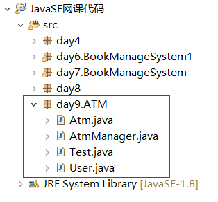

1、实现一个ATM
具体代码见(我写的):

视频老师给的:
-------------------------------------------------------------------------------------------------------------------------------------------------------------------------
程序包：
用来管理类和接口的工具。
创建包的方式:
package 包名;
包是具有层次结构的:(空的父包名在eclipse是会省略的)
package 父包名[.子包名.……];
命令规则:
包名： 小写
通常命名方式是: 域名反转
即: 顶级域名(.com或.cn等).部门名.项目名;
如 com.abc.bookmanage
-------------------------------------------------------------------------------------------------------------------------------------------------------------------------
不同包之间的访问：
方法1.需要导入程序包: (在多次使用某个包时使用该方法)
import 包名.类名; (导入包中的某个具体的类)
或者 import 包名.*; (导入该包下的所有类)
如下面的在a包中的类A想用使用b包中的类B,则需要导包访问才能
方法2 :使用完全限定名称(不用导包): (在只使用一次其他包的某个类时,使用该方法较好)
直接在使用该类时使用 包名.类型名 来访问

2.只导入父包下的类型时，是不会包括子包下的类型的；
只导父包时,如果该父包有子包,那么子包里的类还是不能用

3.两个包下有同名的类，只能用完全限定名称来访问。
如以下两个包,用导包的方式来使用d包中的类A,会报错,只能用完全限定名来在包a中使用d包中的类A


-------------------------------------------------------------------------------------------------------------------------------------------------------------------------
程序包的优点：
1.用来管理类；
2.防止命名冲突；
因为一个类在文件夹中的文件名一般是public修饰的类(当然这种是在一个文件中有多个并列类的情况下。当只有一个类
时,不论是什么修饰的文件名都是该类),除了public修饰的类,可能还有其他类(如默认类和private类),这种情况下,如果这些
类都在同一个包中,不知道一个类文件中有哪些类,则很容易命名冲突。
如下中 Inner类定义在一个单独的.java文件中

若在同一个包的另一个.java文件中定义两个并列类,其实不作为文件名的类(非public修饰的)则会报错说这个类已经被定
义。如果这两个.java文件在不同的包下则不会这样了。

3.更好的保护类和类中的成员（体现封装）。
前面所说的类A可以通过导包或完全限定名称来访问其他包中的类B, 是因为类B是public的, 如果类B在其他包中不是public的(是默认的或者private的等),那么类B对于类A来说是不可见的,类A通过导包和完全限定名称也访问不了该类。如:

这是在a包中定义的一个类A,可以看到它无法访问d包中的默认类A

-------------------------------------------------------------------------------------------------------------------------------------------------------------------------
package 包名 : 这行代码一定要写在文件中的第一行，而且只能有一行。
--------------------------------------------------------------------------------------------------------------------------------------------------------------------------
访问修饰符：(访问的级别,表示它所修饰的成员的访问可见性)
修饰符有很多, 但访问修饰符只要四个
下面是访问修饰符以及他们可以在哪些地方被访问: (默认即什么访问修饰符都不加)
本类 同包 子类 不同包
private 可以
默认 可以 可以 (子类和父类同包时,子类可以直接使用父类的被默认访问修饰符修饰的成员,不同包则不能使用)
protected 可以 可以 可以 (也就是说,只要是其子类,同不同包都能直接使用。不同包的话,其他类(非子类)就不能访问了)
public 可以 可以 可以 可以
private访问权限举例:

------------------------------------------------------------------------------------------------------------------------------------------------------------------------
static : 修饰符
可修饰：
属性;
方法( );
代码块{ };
类{ }
(static修饰类时只能出现在内部类时,顶级类(或者说一个独立的类)不能直接被static修饰,会报错)
-------------------------------------------------------------------------------------------------------------------------------------------------------------------------
static修饰属性： (注意访问修饰符在static修饰符的前面)
class 类{
访问修饰符 static 类型 变量名; //称为静态变量，或者称为类变量。
访问修饰符 static 类型 方法名; //称为静态方法，或者称为类方法。
}
举例:

下面这张图的代码是错误的实现代码: (他们new了两个新对象,然后是各自的成员变量做了相应的操作,所以不是整个类的count+2)

这是上面这张图的代码执行完后的内存情况,可以看出成员变量是属于对象而不属于类的,所以无法实现问题的需求

但只需要前面代码的基础上, 在count变量前面加一个static即可达到 问题的要求

先看上面的代码在类加载时的内存图: (类加载的简化原理见后面文字)

下面的是上面的代码的实际执行时的内存图: 可以看出,即使是guojing.count 、huangrong.count 调用的却是方法区(而非堆区)
的类成员count,而不是属于对象的成员。但也要注意guojing.count 、huangrong.count 这种写法编译器是会出警告的。

静态成员:
属于类，不属于对象；
被所有对象所共享；
优先于对象而存在。
.java源文件是如何被编译运行的: (类加载的过程)
javac命令 将.java源文件编译,变成 .class(字节码文件) (由源文件变成字节码文件)
java命令 调用 JVM（将.class文件加载到JVM的内存中） (具体是将.class文件里的内容加载到JVM内存中的方法区中)
整个类加载完后,才能根据模板创建对象,故静态成员初始化完成是优先于对象的,即静态成员是优先于对象而存在的。
静态变量的使用方式：
1.对象名.静态变量名：
2.类名.静态变量名； //建议使用这种 (如果是在自己的类中使用自己的静态变量,还可以省略类名不写,直接通过静态变量名来使用)
适用场合：
需要同一个类的多个对象共享同一个空间的时候。
-------------------------------------------------------------------------------------------------------------------------------------------------------------------------
静态变量(类变量)和实例变量(归对象所有)的区别：
1.静态变量属于类；实例变量属于对象；
2.静态变量在类加载时加载，存在方法区中；
实例变量在创建对象时创建，存在堆中；
3.静态变量在类卸载时释放（类卸载简单来说是在应用程序结束时）
实例变量在对象销毁时即释放。(当然一般明显早于类卸载)
所以静态成员的生命周期特别长, 在整个类的使用过程中一直占用内存空间,使用时要谨慎
-------------------------------------------------------------------------------------------------------------------------------------------------------------------------
静态方法：
public static void show( ){ }
属于类
需要注意的是静态方法中不能再定义静态变量了,会报错。因为静态方法里的变量已经是可以直接不创建对象就被调用该静态方法时使用到了,再将静态方法里面的变量定义成静态变量也就没有了意义(就算定义静态常量也会报错)。实际上, static修饰变量仅仅可以修饰类的成员变量以及静态内部类里的成员变量, 就这两种。
使用方式:
类名.静态方法名(); //推荐使用
对象名.静态方法名(); //也可以调用,但不推荐,会有编译警告
场合：
需要同一个类的多个对象共享同一个空间的时候；
使用方便,不用创建对象；
不能创建对象时。
静态方法和实例方法区别：
1.静态方法只能直接访问静态成员；
实例方法可以直接访问静态的和非静态的成员;
举例:

静态方法需要先创建对象才能访问非静态成员,但能直接访问静态成员(main方法同样也是静态方法)

2.静态方法不能使用 this、super(用于调用父类成员)
因为this是指向当前对象的,连对象都没有,当然指不了。而super调用父类成员时也可能调用到非静态成员, 所以不能使用。
实例方法可以使用this，super
-------------------------------------------------------------------------------------------------------------------------------------------------------------------------
静态块：(也就是用static来修饰代码块(代码块即构造块))
1.构造块(在创建对象时执行)
class 类{
{
构造块：初始化对象，解决的构造方法中代码冗余。
}
}
2.静态块 (即静态代码块, 在加载类的时候就会自动执行)
class 类{
static {
静态块：初始化类（初始化静态变量,当然静态块也只能访问静态成员） 为类中的静态成员进行初始化的
}
}
举例: 不需要先创建对象就可直接使用静态成员

主方法是程序的入口,但在运行主方法前,当然要先加载主方法所在的类(即主类,也叫启动类)
所有的类加载到方法区在堆中都会生成一个该类对应的对象,这个对象是Class类型(注意和小写的class区分,小写的class是
一个关键字,用来声明定义类的,而大写的Class是一种类型--类类型。不同的类类型的对象中定义了有不同方法,自己定义
了一些功能(类名、属性、方法、构造器之类的)。类类型也是一种引用类型,是类向上抽取出来的类型。可以通过类类型的
对象,调用类类型里的方法,来获得字节码文件中的所有信息,这就是反射的机制,因为所有字节码文件的对象都是Class类型,
所以他们都有那些功能(类名、属性、方法、构造器之类的),只是功能的具体不同)
然后才是利用该类对应对象创建出(实例化出)实际的对象
上面的代码的内存图如图:

3.局部块 : (即局部代码块,也就是在方法中使用的代码块 )
public void f(){
int n = 2; //局部变量,只能在当前方法中使用
{
局部代码块: 限制局部变量的使用范围和生命周期。(比如说在for循环里声明定义的变量,就被循环的括号包裹,只能在循环里使用)
}
}
局部变量的生命周期是在方法使用完后被释放掉, 而局部代码块里定义的变量则在局部块执行完时即被释放。
(这里所说的释放都是执行一次即释放一次,多次执行当然每次执行就会重新声明定义一个新的变量了)
举例: 在局部代码块里面定义的x变量在局部代码块外面就无法使用了,会报错

-------------------------------------------------------------------------------------------------------------------------------------------------------------------------
静态导入：
import static 包名.类名.静态成员名;
import static 包名.类名. * ; //快捷方式。导入该类的所有静态成员
举例:


当其他包想调用b包中的B类里的静态方法时, 就可以有两种不同的操作方式,注意下图中红笔和蓝笔框起来的区域的不同操作。
当然,红笔的操作方式是会出警告的,用的是 对象.静态成员 的方式,当然会警告。蓝笔所用的方式则可以直接用 类名.静态成员名 的
方式来进行操作,并且这种导包方式下还可以在一个类里使用别的类的静态成员时,省略类名不写。

---------------------------------------------------------------------------------------------------------------------------------------------------------------------------
单例模式：(即保证,某个类始终在堆里面只创建一个对象(实例),单例模式是24中设计模式中最简单的一种)
比如说一个音乐播放器就一个窗口,每次切换歌曲时还要保持在同一个窗口,而一个窗口显然就是一个对象了。
而此时就可以把音乐设置为静态成员。

首先要明白为什么能创建多个对象。每次创建对象是通过new关键字加上构造方法创建出来的,所以要想阻止创建多个对象,
就要阻止使用构造方法。
举例:下面的Window类即是单例模式的饿汉式的设计方法:

上图的程序执行时,先是会主动加载main方法所在的类TestWindow, 而其他类(如Window类)则是执行时有使用到它才会将它
预先加载到内存中,如果没有使用到,则不加载(当然,有没有使用到这在编译时编译器就已经判断出来了,所以加不加载其他类
在编译后就已经确定了,如果加载则和主类一起一次性全部加载到内存中)。有没有使用Window类不是看Window类有没有
出现在代码中,而是看它有没有被执行(如: 在TestWindow类的一个非静态私有成员里使用了Window类,但是TestWindow并没有
去创建对象,这样Window类就不会在编译后的字节码文件里出现,显然也是没有使用到Window类的,Window类也就不会被加载到内存中)。
同时,类也只会加载一次,即使同一个类在代码中被调用了多次,也不会被重复加载, 这是类加载器的源码所决定的
下面是懒汉式的代码: 和饿汉式区别不大。

区别：
1. 饿汉式：类加载时对象就存在了。
懒汉式：类加载时对象不存在，只有在使用到时才创建对象。
2.多线程时:
饿汉式： 线程安全的。
懒汉式： 线程非安全的。
------------------------------------------------------------------------------------------------------------------------------------------------------------------------
常用API之Math类

举例:

Math.random()方法在底层调用的是Random类的nextDouble()方法。而Random类还有很多产生各种随机数的方法。

随机种子在创建对象时指定
随机种子是一个long类型的数字,该数字会参与随机算法来生成一个随机数。随机种子会使一次编译后,在同一次运行时,同
一个Random对象产生的随机数的值是按某个规律依次变化的,不受时间的影响,只受访问该Random对象次数的影响(要是
同一次运行时,下一次运行又会从第一个随机数开始,不管是什么时间),访问一次变一次。而且再次重新运行后产生的结果会
和上次运行时的结果一样,即使重新编译后也一样。
有了随机种子后,在如果两个Random对象的随机种子是相同的,那么在相同访问次数时,它们产生的随机数一定是相同的。
也就是说, 当种子一样的时候，虽然每次.nextXXX的方法会返回不同的结果，但是由于每次new Random(相同的seed时)创
建的“随机数生成器”都相同，因此之后产生的随机数序列也就都是一样的,也就是说随机数序列是一定的、固定的。所以
每次调用该函数生成随机数都会产生固定的结果。

问题举例:

方法1: int random = (int)(Math.random()*(10-1+1)+1);
方法2: int random = new Random().nextInt(10)+1; //因为nextInt(10)产生的是[0,10)的随机数,所以+1即为[1,11) ,对于整数来
//说正好是[1,10]。
———————————————————————手写与上传资料分割线——————————————————————